Natas: Web Exploits Walkthrough Levels (0-4)
I am a frontend web developer and I've come across NATAS before but have not documented and taken cybersecurity challenges as seriously as I have now and wanted it to be my first blog post. I chose NATAS specifically over other platforms like PicoCTF or HackTheBox as I am most familiar with Web Development. I do plan to eventually branch out and cover other aspects of Cyber Security but for now I plan to document my journey through the NATAS levels. I hope this writeup helps beginners like myself find comfort and more understanding about the topic.
Level 0 > Level 1
The challenge starts with the message:
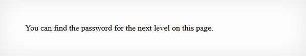
So, I did step 1 of any web exploitation challenge which are:
- Right click
- Inspect the page or hit the F12 key
- Collapse any HTML elements shown in the Elements tab.
I collapsed the <div#content> tag found inside the <body> tag and found the flag in a comment.
<div id="content">
You can find the password for the next level on this page.
<!--The password for natas1 is "gofindoutforyourself:)" -->
</div>Level 1 > Level 2
The challenge starts with the same website layout but with a different message:
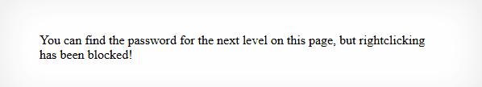
As listed previously, another way to inspect web pages is using your F12 Key. Now that we can successfuly inspect web pages again, let's investigate the website as we did before on Level 0.
As expected, the flag is in the same <div#content> tag as before.
<div id="content">
You can find the password for the
next level on this page, but rightclicking has been blocked!
<!--The password for natas2 is "gofindoutforyourself:)" -->
</div>Level 2 > Level 3
We have the same layout as before but this time when we inspect the page there are no signs of a flag in the
<div#content>
tag. However, there is a new image file so I'm thinking the flag has something to do with this image file.
<div id="content">
There is nothing on this page
<img src="files/pixel.png">
</div>I notice that the file source is src="files/pixel.png, the important part here is the files directory where this pixel.png lives.
Now I'm curious if we can access that directly so I type /files into the URL bar which results in http://natas2.natas.labs.overthewire.org/files/
and we are directed to:
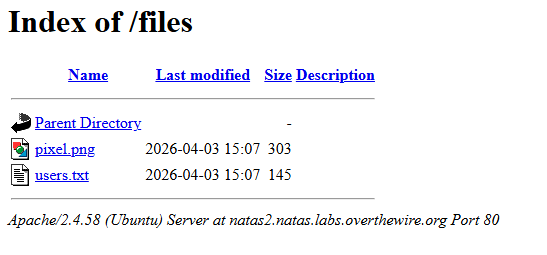
I then see users.txt and at this point I know we've got the flag. I open it and check it out:
# username:password
alice:BYNdCesZqW
bob:jw2ueICLvT
charlie:G5vCxkVV3m
natas3:finditforyourself:)
eve:zo4mJWyNj2
mallory:9urtcpzBmH
We then see a list of usernames with their corresponding passwords. We can also see that natas3 is one of the username with its password being the flag we've been looking for!
Level 3 > Level 4
We are presented with this message:
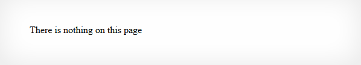
So, let's do the usual and inspect the web page.
<div id="content">
There is nothing on this page
<!--No more information leaks!! Not even Google will find it this time..-->
</div>
Mhmmm that's very weird. Everything that's written down in a CTF like a comment like this should be taken as a hint. The comment is implying that Google the search engine cannot access the resource or file we are looking for.
Therefore, let's Google search how a website achieves this:
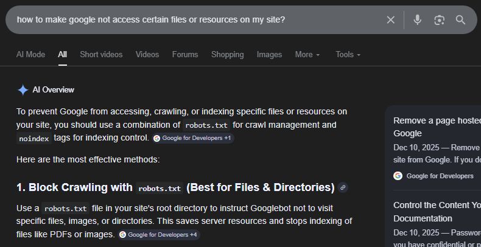
The results suggests using a robots.txt and noindex tags and with more investigation we will learn that robot.txt is used to block files or certain directories while noindex is used to prevent a page from appearing in search results but still allowing google to crawl it.
In our case, the comment says even Google cannot find the file we are looking for or in other words Google cannot crawl this resource at all. Therefore, we can conclude that this site is using a robots.txt file.
We need to gain access to this robots.txt file to revert its effects so we can access the resource we want that most definitely has the flag we want.
But how do we find a robots.txt file of a website? If we Google where this robot.txt file is usually located in websites:
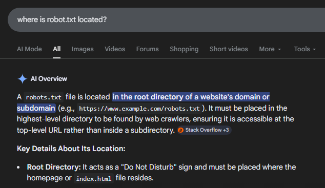
Results will show you that it has to be located in the root directory. Therefore, we can type /robots.txt onto our URL and we should get be able to access it.
User-agent: *
Disallow: /s3cr3t/Now, we get a text file and its content stating to disallow a directory called /s3cr3t/, let's try accessing this by adding it onto our URL.
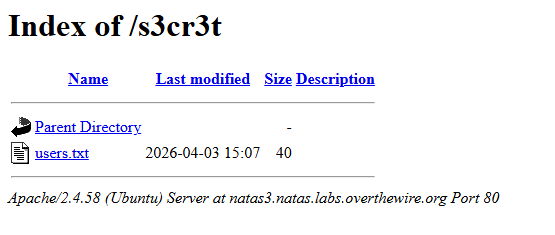
We now see a familiar file users.txt so lets open it!
natas4:finditforyourself:)And as expected, the flag is located inside.
Level 4 > Level 5
The challenge message shows:
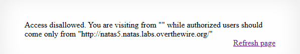
This is an interesting message and I currently don't really know what it means. Let's explore what this refresh link does.
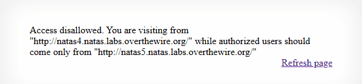
When I hit the refresh link all it changes the message to this and directs us to a new file called index.php
Inspecting the HTML code leaves us with no clues.
<div id="content">
Access disallowed. You are visiting from "http://natas4.natas.labs.overthewire.org/index.php"
while authorized users should come only from "http://natas5.natas.labs.overthewire.org/"
<br>
<div id="viewsource"><a href="index.php">Refresh page</a></div>
</div>This challenge is going to be alot tougher as this doesn't seem to be located in the client side such as checking for comments in comments in the source code or manipulating URLs to get to certain directories. The message itself is also a hint to the concept of this challenge. The problem is that I do not know this concept myself making it very hard to learn something you don't know the name of. But we shall try our best.
After 15 or so minutes of struggle, I genuinely wanted to give up and look up the answer. But that would have defeated the whole purpose of this writeup.
So, I regrouped and I start Googling things like:
- "visiting from site access web security"
- "how to let websites ignore where i came from"
- "how to change the link I came from when accessing a site?"
Most of the results mentioned location based searching where it talked about changing your geographical location when accessing websites which was not what I was looking for. I wanted to find a way if the site can ignore or change what website link I came from and let me through and this particular result interested me.
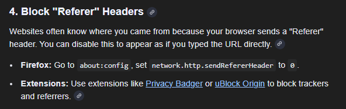
So, maybe if I could somehow access and change it I could maybe go through was my thought process. I then Google how to change or modify this referer header mentioned and it led me to various rabbit holes that did not give me anything.
I then go back to the NATAS home page and see that tools listed include curl and zap proxy. I Google what these are and get to work.
I learn that curl is a tool built-in to the command prompt or other terminals if your using Mac or Linux and that its used to make HTTP Requests
which means there could be a way to make a http request that has a specific referer header that is different!
I open Command Prompt and before running curl into my command prompt. I want to first learn how to even
use curl as I know nothing about it.
Here is the documentation page I checked out. I use Ctrl + F and search for "Referer" to speed things up and see this:
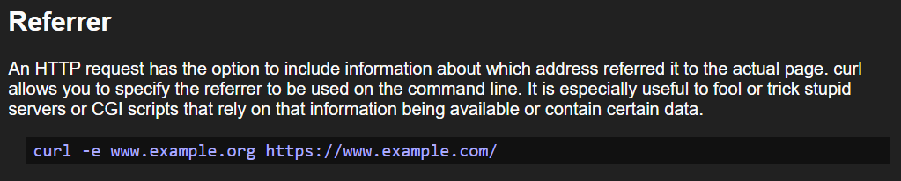
So, I try this exact command but changing the URLs to the ones we want:
curl -e http://natas5.natas.labs.overthewire.org/ http://natas4.natas.labs.overthewire.org/index.phpThis ended up not working and resulting in an error. I assume its because we have to authenticate with a username and password
like we do with the other levels. So, I Google search "how to use username and password in curl"
and see that its as simple as adding a -u flag followed with your username and password which results in:
curl -u "natas4:QryZXc2e0zahULdHrtHxzyYkj59kUxLQNow, let's add what we have from before:
curl -u "natas4:QryZXc2e0zahULdHrtHxzyYkj59kUxLQ" -e http://natas5.natas.labs.overthewire.org/ http://natas4.natas.labs.overthewire.org/index.phpThere we go! We get a response back and its the Access Granted page!
<head>
<!-- This stuff in the header has nothing to do with the level -->
<link rel="stylesheet" type="text/css" href="http://natas.labs.overthewire.org/css/level.css">
<link rel="stylesheet" href="http://natas.labs.overthewire.org/css/jquery-ui.css" />
<link rel="stylesheet" href="http://natas.labs.overthewire.org/css/wechall.css" />
<script src="http://natas.labs.overthewire.org/js/jquery-1.9.1.js"></script>
<script src="http://natas.labs.overthewire.org/js/jquery-ui.js"></script>
<script src="http://natas.labs.overthewire.org/js/wechall-data.js"></script>
<script src="http://natas.labs.overthewire.org/js/wechall.js"></script>
<script>var wechallinfo = { "level": "natas4", "pass": "QryZXc2e0zahULdHrtHxzyYkj59kUxLQ" };</script>
</head>
<body>
<h1>natas4</h1>
<div id="content">
Access granted. The password for natas5 is 0n35PkggAPm2zbEpOU802c0x0Msn1ToK
<br/>
<div id="viewsource"><a href="index.php">Refresh page</a></div>
</div>
</body>
</html>We can also see the flag in the usual place <div#content>, that took a really long time...
and that's also enough NATAS for today :)
Takeaways
The beginning levels were quite a breeze for me but it was still good to get into the habit of doing those challenges. However, Level 4 made my head explode multiple times but I did learn alot which is good! Here are the takeaways you should have from these challenges:
Level 0
Do not leave sensitive data in HTML comments and think nobody can see them. It is true that it does not get rendered onto the page but anyone can still see the source code and that includes comments.
Level 1
Disabling right click is not a way an effective way to combat Level 0's vulnerability. It's more like a very minor inconvenience if you don't have a keyboard!.
Level 2
This web vulnerability is called directory listing. It is when a website exposes all its contents
of a folder because no index.html exists and directory listing isn't disabled.
Level 3
For robots.txt to work and accessible to search engines, it has to be public by design.
Therefore, do not hide sensitive directories in a public file such as robots.txt.
This is the equivalent of putting a "DO NOT OPEN" sign on notebook and expecting no one opens it.
Level 4
The referer header is data that dictates what link you came from. This referer header is sent by the browser and therefore can be set to anything with the right tools such as curl which I can tell is a tool I will probably need going forward. Relying on a referer header for access control is ineffective and can be easily broken.